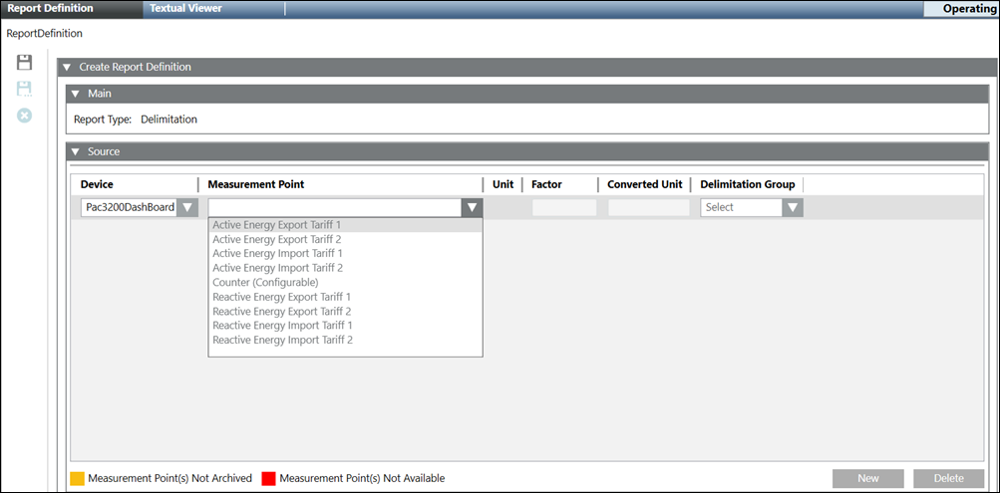

Configure the Delimitation Report
- You have selected the Delimitation Report type for configuration.
- The Report Definition configuration page displays.
- In the Main expander, Report Type displays, Delimitation, the type of the report.
- In the Source expander, click New to add a new device and configure the following:
- Device: Allows you to select the device.
- Measurement Point: Allows you to select the required measurement point.
- Unit: Displays the unit.
- Factor: Displays the factor.
- Converted Unit: Display the converted unit.
- Delimitation Group: Allow you to select the delimitation group.
The following two combinations are available for configuration of Delimitation Reports:
Feed-In | Feed-Out | Total consumption | Own generation | Own consumption | Own consumption Self-generated | Own consumption grid | Third party consumption measured | Third party consumption estimated |
Mandatory | Mandatory | Optional | Mandatory | Mandatory | Mandatory | Mandatory | Mandatory | Mandatory |
Mandatory | Mandatory | Optional | Mandatory | Optional | Optional | Optional | Mandatory | Mandatory |
- Click Save.
- The Delimitation report definition is configured.
